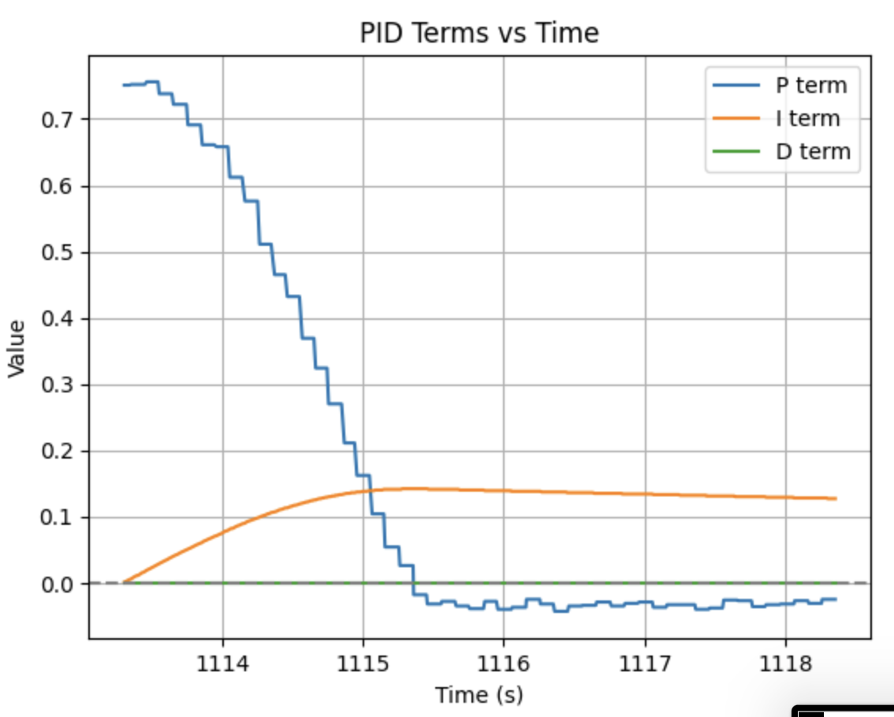
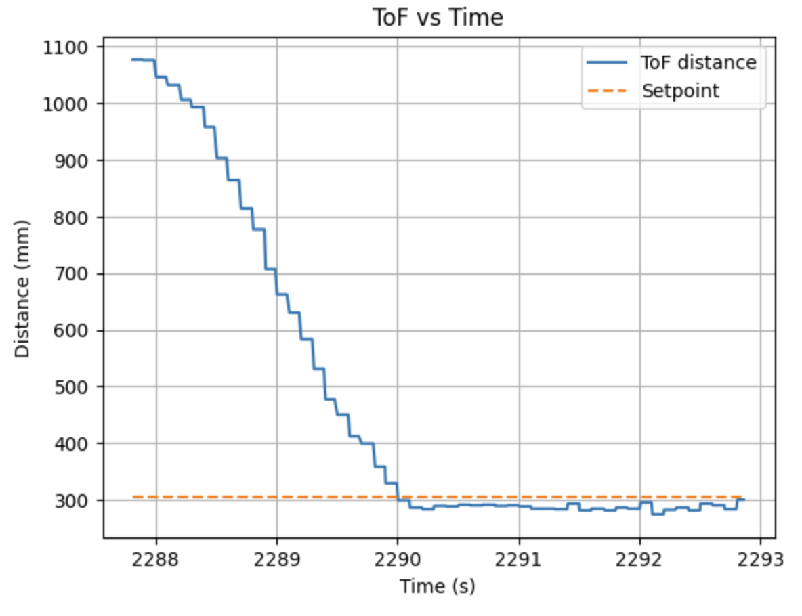
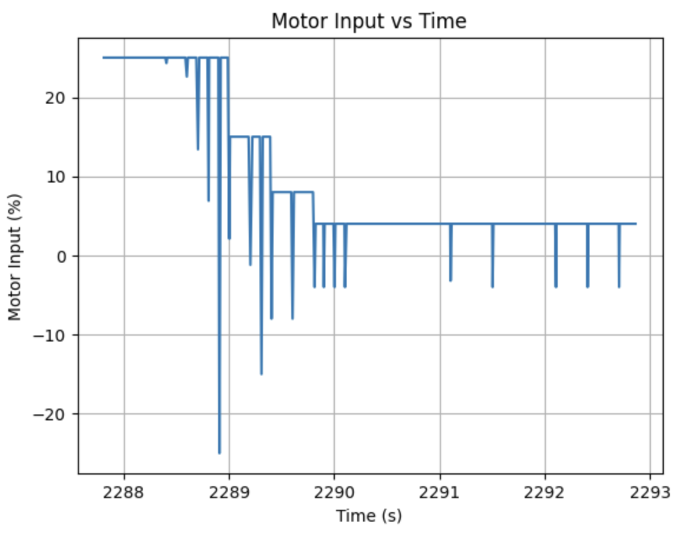
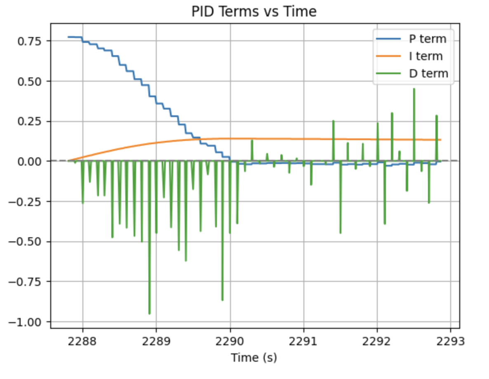

Lab 5: Linear PID control and Linear interpolation
Objective
The goal of this lab is to implement a closed-loop controller that allows the robot to maintain a desired distance from a wall using Time-of-Flight sensor measurements. By implementing and testing P, PI, and PID control, the system adjusts motor speeds in real time to reduce distance error and achieve stable wall-distance regulation.
Pre Lab
Before implementing the controller, I reorganized my firmware using a modular structure similar to the approach shown by Stephan W. Instead of keeping all functionality inside a single .ino file, each major subsystem was moved into its own header file. This makes the code easier to read, debug, and modify during controller tuning.
The firmware was divided into the following modules:
ble.hpp– handles BLE communication and command parsingtof.hpp– manages the two ToF sensors and distance measurementsmotors.hpp– converts motor commands into PWM signalsimu.hpp– processes IMU sensor datacontrol.hpp– implements the P, PI, and PID control logiccmd_types.h– defines the command types used for BLE communicationflags.h– stores system state flags shared across modules
With this structure, the main ble_arduino.ino file only contains the Arduino setup() and loop() functions, while the system logic is handled inside the modules. This greatly simplifies debugging and allows individual components to be updated without searching through a large file.
For debugging and experimentation, I implemented several BLE commands that allow the Python interface to control the robot during runtime. These commands allow the computer to start or stop the controller, enable the motors, start ToF ranging, and update controller parameters.
ENABLE_MOTORS– allows motor PWM commands to be sentDISABLE_MOTORS– immediately stops the motorsSTART_TOF / STOP_TOF– start or stop ToF sensor rangingSET_PID_GAINS– update controller gains from PythonSET_SETPOINT– set the target wall distanceSTART_CONTROL / STOP_CONTROL– start or stop the controller
During each experiment, I start the controller from Python over BLE and let the robot run for a fixed amount of time while storing debugging data locally. After the run finishes, the robot stops and the logged data is sent back to the computer for plotting and analysis.
On the Arduino side, incoming BLE messages are parsed and executed using a command handler. For example, the PID gains can be updated directly from Python using the following command handler:
case SET_PID_GAINS: {
float kp, ki, kd;
g_robot_cmd.get_next_value(kp);
g_robot_cmd.get_next_value(ki);
g_robot_cmd.get_next_value(kd);
control_set_gains(kp, ki, kd);
break;
}On the Python side, commands are sent through a helper interface that formats and transmits messages over BLE. This allows controller gains and other parameters to be adjusted quickly without reflashing the Artemis.
ble.send_command(CMD.START_TOF, "")
ble.send_command(CMD.ENABLE_MOTORS, "")
ble.send_command(CMD.SET_PID_GAINS, f"{Kp}|{Ki}|{Kd}")
ble.send_command(CMD.SET_SETPOINT, "304")
ble.send_command(CMD.START_CONTROL, "")This setup also allows me to update controller gains directly from Python, which makes PID tuning much faster because the Artemis does not need to be reflashed each time the gains change.
I also implemented a simple hard stop in the firmware so the robot stops if the controller is disabled or if motor output is not allowed. This prevents the robot from continuing to move unintentionally if the experiment ends or if communication stops.
if (!g_motors_enabled || !g_control_enabled) {
motors_stop();
return;
}During each experiment, debugging data such as timestamps, raw ToF distance, estimated distance, and controller output are logged directly on the Artemis. Instead of transmitting this data over BLE during every control loop iteration, the values are stored locally in arrays and sent after the experiment finishes. This prevents BLE communication from slowing down the control loop.
g_pid_log[g_pid_log_count].t_ms = t_ms;
g_pid_log[g_pid_log_count].raw_dist_mm = raw_dist_mm;
g_pid_log[g_pid_log_count].est_dist_mm = est_dist_mm;
g_pid_log[g_pid_log_count].error = error;
g_pid_log[g_pid_log_count].u = u;
g_pid_log_count++;Since the Artemis has limited onboard memory, I only store the data needed for each experiment run.
After the maneuver finishes, the stored log data is transmitted back to the computer over BLE, where Python receives the messages and converts them into arrays for plotting and analysis.
msg = ble.receive_string(ble.uuid["RX_STRING"])
data.append(msg)Tasks
1. Position Control setup
With the BLE command interface and logging framework already set up in the pre-lab, I then implemented the wall-distance controller that allows the robot to approach and maintain a desired distance from a wall. The controller was implemented in control.hpp and uses feedback from the front Time-of-Flight sensor to continuously update the motor commands. For all of my experiments, I used a target distance of approximately 304 mm from the wall.
During each control loop iteration, the robot reads the most recent ToF measurement, computes the distance error relative to the target, calculates the control output, applies output limits, converts the output into motor commands, and logs the controller data for later analysis.
The controller runs continuously inside the main loop whenever control is enabled, so the motor commands are updated in real time using the latest distance estimate.
Distance Measurement and Error Calculation
For the controller I only used the front ToF sensor. In my hardware setup this sensor is the XSHUT-controlled sensor, which is stored as g_tof2. I created a helper function that returns the most recent valid distance measurement:
static inline float control_get_raw_distance_mm() {
if (g_tof2_last.valid) return (float)g_tof2_last.d_mm;
return 0.0f;
}The controller then computes the wall-distance error using equation:
\[ e(t) = \text{setpoint} - \text{distance} \]
const float error = g_pid.setpoint_mm - dist_mm;If the robot is farther than the desired distance, the error becomes positive and the robot should drive forward. If the robot is too close to the wall, the error becomes negative and the robot should move backward.
PID Controller Implementation
The robot motion is controlled using a PID controller equation:
\[ u(t) = K_p e(t) + K_i \int e(t)\,dt + K_d \frac{de(t)}{dt} \]
In my implementation the PID controller is computed in discrete time using the following code:
const float error = g_pid.setpoint_mm - dist_mm;
float dt = (now_ms - g_pid.prev_t_ms) * 0.001f;
if (dt <= 0.0f) dt = 0.001f;
// integral term
g_pid.integral += error * dt;
g_pid.integral = clamp(g_pid.integral, g_pid.integral_min, g_pid.integral_max);
// derivative term
const float derivative = (error - g_pid.prev_error) / dt;
// individual PID terms
const float p_term = g_pid.kp * error;
const float i_term = g_pid.ki * g_pid.integral;
const float d_term = g_pid.kd * derivative;
// final controller output
float u = p_term + i_term + d_term;The time step dt is computed from the system clock. The integral term accumulates the error over time and is clamped to prevent integral windup. The derivative term estimates the rate of change of the error between successive control updates.
Output Limiting and Motor Command
During my first experiments the robot approached the wall too quickly and often overshot the desired distance. To improve this behavior, I implemented a distance-dependent output limiter so that the maximum control signal decreases as the robot gets closer to the target.
static inline float control_get_dynamic_limit(float error_abs_mm) {
if (error_abs_mm > 400.0f) return 0.25f;
if (error_abs_mm > 200.0f) return 0.15f;
if (error_abs_mm > 80.0f) return 0.08f;
return 0.04f;
}The controller output is then limited and applied to the motors:
float u_limit = control_get_dynamic_limit(fabs(error));
u = clamp(u, -u_limit, u_limit);
// stop band near the setpoint
if (fabs(error) < 10.0f) {
motors_stop();
g_pid.prev_error = error;
g_pid.prev_t_ms = now_ms;
return;
}
// send command to motors
if (g_motors_enabled) {
motors_set_normalized(-u);
} else {
motors_stop();
}This section of the code performs three tasks. First, it limits the maximum control signal so the robot slows down as it approaches the wall. Second, it introduces a small stop band around the setpoint to prevent constant oscillations near the target distance. Finally, it converts the normalized control signal into motor commands.
I used -u in the motor command because of the motor orientation on my robot, so a positive control output drives the robot toward the wall.
2. PID
P
I first tested the controller using only proportional control with gains K_p = 0.001, K_i = 0, and K_d = 0. As shown in the ToF vs time plot, the robot approaches the wall quickly and slows down as the error decreases. However, the robot overshoots the target distance and settles too close to the wall, around 230–240 mm instead of the desired 304 mm. The motor input plot shows the controller applying a small corrective command after the overshoot, but the output becomes too small to move the robot back to the setpoint.


PI
To reduce the steady-state error observed with proportional control, I added an integral term and tested a PI controller with gains K_p = 0.001, K_i = 0.00015, and K_d = 0. As shown in the plots, the robot approaches the wall and settles closer to the target distance compared to the proportional-only controller. The integral term accumulates the error over time, which increases the control signal and helps overcome motor deadband and friction. The final distance is still slightly below the target, but the steady-state error is smaller than in the proportional-only case.



PID
Finally, I tested a full PID controller with gains K_p = 0.001, K_i = 0.00015, and K_d = 0.00015. As shown in the plots, the robot approaches the wall and settles closest to the desired distance compared with the previous controllers. The derivative term helps slow the robot as it nears the setpoint, which reduces overshoot and improves the final accuracy. However, the PID terms plot shows that the derivative term produces large spikes due to noise in the ToF measurements, which also appears as fluctuations in the motor input. From this observation, a low-pass filter on the derivative term would likely improve stability by reducing the effect of sensor noise.



3. Extrapolation
At first, the PID controller was limited by the update rate of the ToF sensor, since the controller could only react when a new distance measurement became available. To improve this, I decoupled the control loop from the sensor update rate so that the PID controller runs every loop iteration, even if the ToF sensor has not produced a new reading yet. In my implementation, the ToF sensor only updates the stored distance value when new data is ready, while the controller continues running using the most recent distance estimate.
In the main loop, the ToF update and the control update are handled separately. The controller runs whenever control is enabled, while the ToF sensor only updates when new data is available.
void loop() {
imu_update();
if (g_tof_running) {
tof_update();
}
ble_update();
if (g_control_enabled) {
control_update();
}
}I measured the approximate execution rates of both processes. The control loop runs at about 127.04 Hz, while the ToF sensor produces new measurements at about 9.98 Hz, Which is a little low but this means the controller runs roughly 12 times faster than the sensor, so simply reusing the last ToF measurement would introduce noticeable delay in the controller response.
To address this issue, I implemented a simple linear extrapolation algorithm to estimate the robot’s current distance between ToF updates. Every time a new ToF reading is received, I store the last two measurements along with their timestamps. These values are used to estimate the slope of the distance change:
\[ m = \frac{d_2 - d_1}{t_2 - t_1} \]
Then, if the controller runs before a new sensor measurement arrives, the current distance is estimated using the elapsed time since the last sample:
\[ d_{est} = d_2 + m (t - t_2) \]
In my controller implementation, both the raw distance and the extrapolated distance are available, but the extrapolated value is used for the control calculation because it better represents the robot’s current position.
const float raw_dist_mm = control_get_raw_distance_mm();
const float est_dist_mm = control_get_estimated_distance_mm();
const float error = g_pid.setpoint_mm - est_dist_mm;This allows the PID controller to keep updating even when the ToF sensor has not returned a new measurement yet. As a result, the control loop can operate at the full controller rate while still incorporating new sensor readings whenever they become available.
The figure below compares the raw ToF measurements with the extrapolated distance estimate used by the controller.
4. wind-up protection
My Artemis board was shorted............